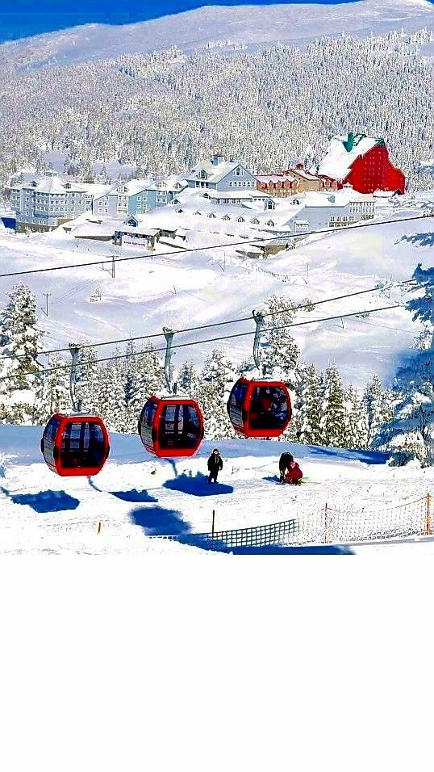
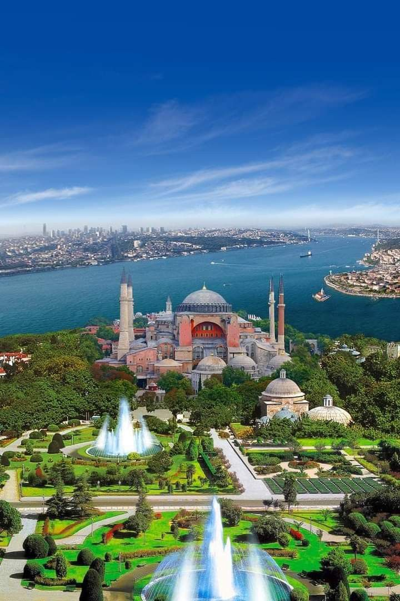
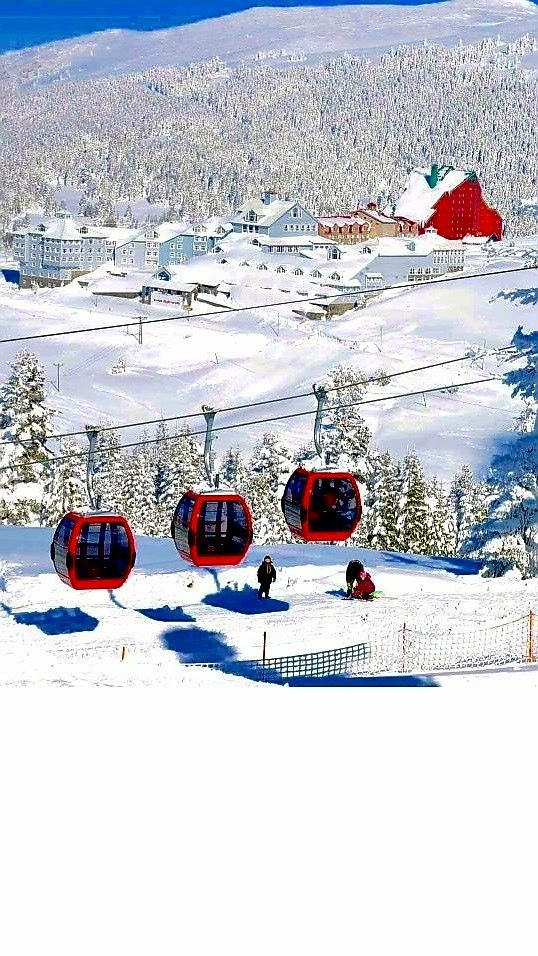
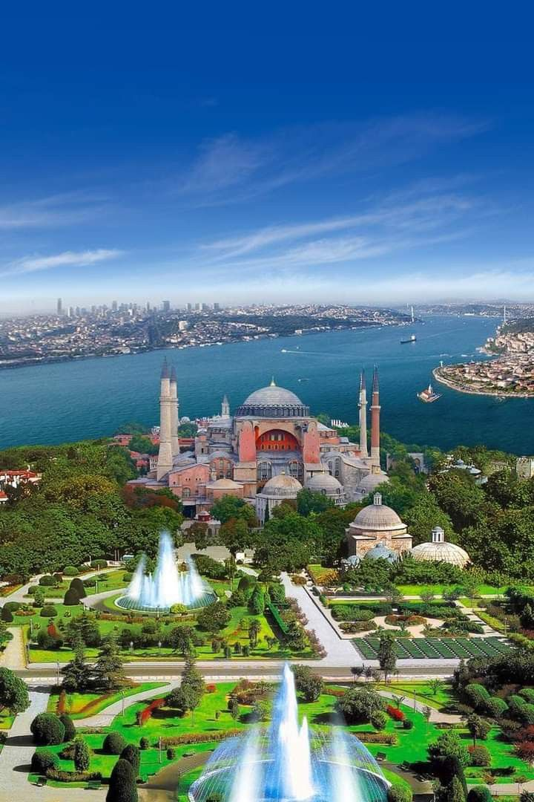

Türkiye'nin kuzeybatısında yer alan Marmara Bölgesi,
ülkenin sanayi, ticaret ve ulaşım açısından en gelişmiş bölgesidir.
İstanbul gibi tarihi ve kültürel zenginliklere sahip büyük şehirleri barındırır.
Ayrıca, Trakya toprakları Avrupa kıtasında yer aldığı için Marmara,
Türkiye’nin Avrupa ile bağlantısını sağlayan önemli bir kapıdır..
📍 İstanbul
Türkiye’nin en kalabalık ve en tarihi şehri olan İstanbul,
Asya ve Avrupa kıtalarını birleştiren eşsiz konumuyla dikkat çeker.
Ayasofya, Topkapı Sarayı, Boğaziçi Köprüsü ve Galata Kulesi gibi simgeleriyle hem Osmanlı
hem Bizans mirasını taşır. Kültürel çeşitliliği, hareketli yaşamı ve tarihi yapılarıyla adeta bir açık hava müzesidir..
📍 Bursa
Osmanlı Devleti’nin ilk başkenti olan Bursa,
tarihî ve doğal güzellikleriyle öne çıkar. Uludağ gibi önemli bir kayak merkezi ve kaplıcaları
ile kış turizminin gözdesidir. Aynı zamanda İskender kebabı, Yeşil Türbe ve Ulu Camii ile tanınır.
Gelişmiş sanayisiyle Marmara Bölgesi’nin önemli kentlerinden biridir..
📍 Edirne
Osmanlı’nın ikinci başkenti olan Edirne, mimarisi ve kültürüyle zengin bir geçmişe sahiptir.
Mimar Sinan’ın ustalık eseri Selimiye Camii, kente damgasını vurur.
Her yıl düzenlenen Kırkpınar Yağlı Güreşleri ve tarihi köprüleriyle Edirne,
geleneksel ve tarihî değerleri yaşatan bir sınır şehridir.
 


